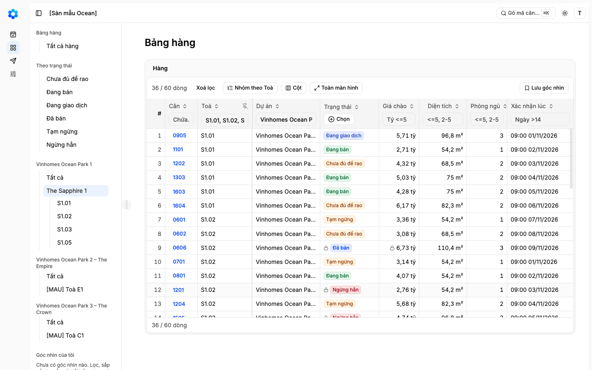
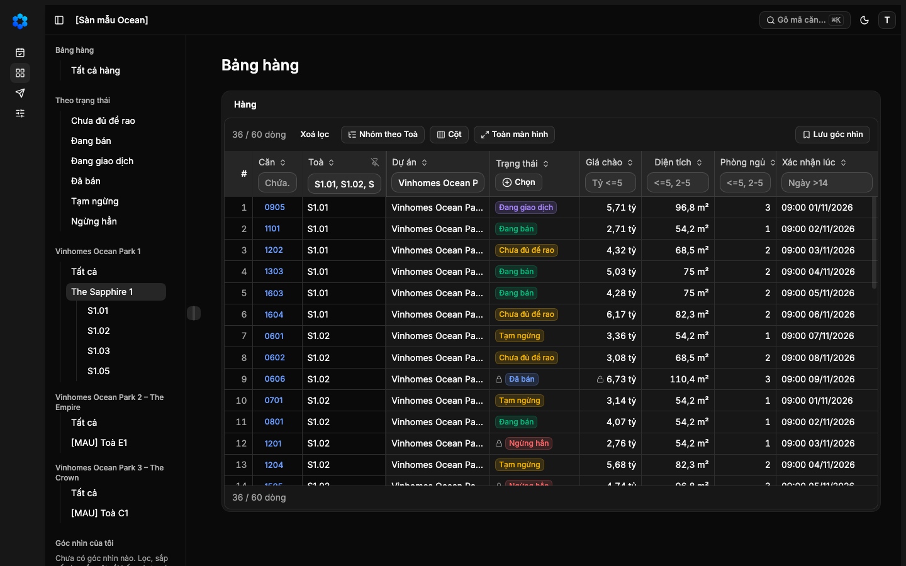
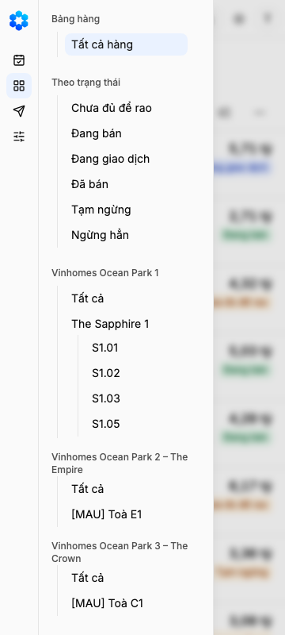
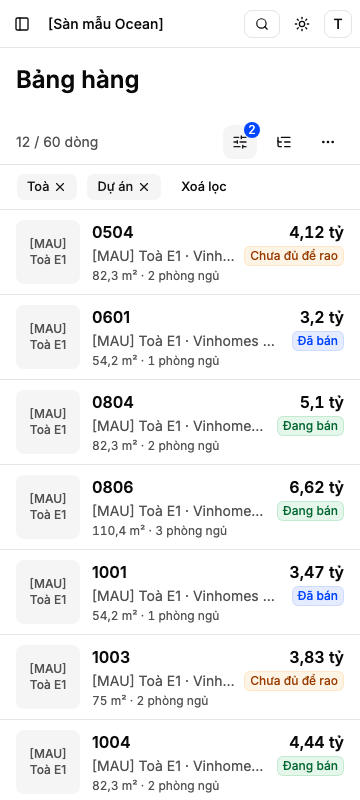
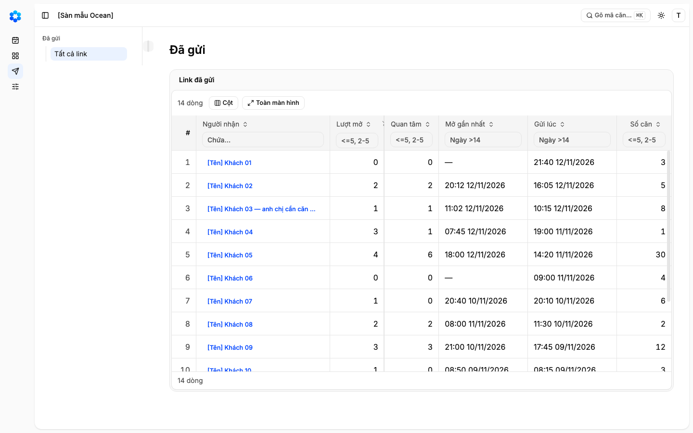
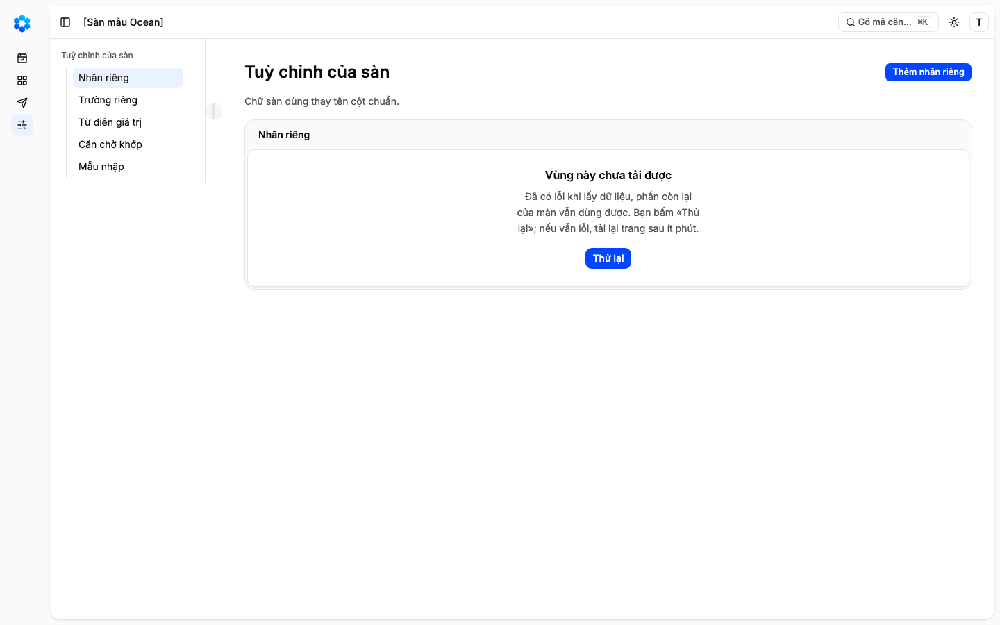
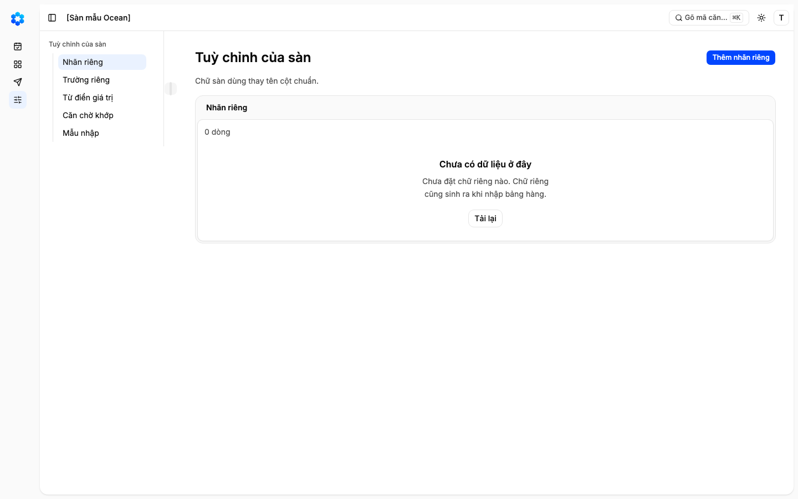

Ảnh của hàng 2d




Trước

Sau

Trước

Sau

Số căn: mục tiêu ban đầu viết «cây … kèm số căn»; anh đã bỏ số căn ở Cổng Phạm vi cho cột thứ hai đồng nhất. Số căn của nơi đang chọn đọc ở chân bảng («36 / 60 dòng»), trên điện thoại ở đầu danh sách thẻ («12 / 60 dòng»).
Lượt chấm: sáu lượt. Lượt 1 trả (ảnh ô lọc cắt tên, dẫn tới sửa AC-3); lượt 2, 3 đạt; lượt 3 tìm ra lỗi bấm kèm phím, đã sửa; lượt 4 vượt trần, giám sát cho, đạt. Sau khi gộp hàng 2b (điện thoại thành thẻ), lượt 5 trả vì một bài kiểm điện thoại còn chờ bảng; đã sửa; lượt 6 vượt trần, giám sát cho, đạt, không còn lỗi nào trong hợp đồng. Hai lần chạy dừng giữa chừng vì đĩa đầy và Docker hỏng không tính.
Không mục nào làm hỏng một tiêu chí. Cột «Đích đến» là nơi nợ được trả.
| Mục | Việc | Máy đề xuất | Đích đến |
|---|---|---|---|
| Ngoài-1 | Cột thứ hai và bảng mỗi bên dựng cây địa lý một lần, từ hai nguồn dòng; với dữ liệu mẫu thường hai bên khớp nhau, chỉ có thể lệch ở bản mẫu biên. Khi có dữ liệu thật, cây phải đọc theo sàn đang đăng nhập, từ một nguồn (SP-1, quyết định 0036). | ghi Known limits | hàng 10 |
| Ngoài-2 | Một ghi chú trong mã nằm nhầm trên hàm khác. Người dùng không thấy gì. | chấp nhận, không sửa | — |
| Ngoài-3 | Một bài kiểm của mô-đun nhập dữ liệu mẫu từ lớp màn hình — đặt chưa đúng chỗ. | ghi Known limits | hàng 10 |
| Ngoài-4 | Bài kiểm «không số đếm trên mục» tìm một dấu mà mã chưa từng vẽ, nên nếu sau này số đếm quay lại dưới dạng khác thì bài vẫn xanh. | ghi Known limits | hàng 10 |
| Ngoài-5 | Bài máy «giữ lọc trạng thái sau khi chọn toà» tính số từ dữ liệu, không đọc ô Trạng thái; bài trình duyệt cùng việc thì có đọc ô ấy. | ghi Known limits | — |
| Ngoài-6 | Ca phá «toà rỗng không hiện» chèn nút vào cây đã dựng thay vì vào danh mục. | ghi Known limits | hàng 10 |
| Ngoài-7 | Bài quét «cây không thêm lần đọc dữ liệu» chưa đi hết các tệp mà nó kể tên. | ghi Known limits | hàng 10 |
| Ngoài-8 | Bài trình duyệt E7, E8 so số dòng ở chân bảng thay vì so từng dòng. | ghi Known limits | — |
| Ngoài-9 | Hàm đọc chân bảng trả 60 khi không đọc được, nên vài bài có thể xanh khi chân bảng biến mất. | ghi Known limits | — |
| Ngoài-10 | E10 đọc luật trong tệp hướng dẫn thay vì đo trên màn; phần đo trên màn đã có ở E5. | chấp nhận, không sửa | — |
tools/e2e_templates/settle.ts: thêm hai tên bài kiểm của 2d vào danh sách bài dùng lối chờ chung — chỉ thêm 4 dòng, không nới bài nào. Giám sát báo việc này đã được cho phép trước ngày 12/11; chữ ký của anh ở đây là bản ghi duyệt.
Không đồng ý việc nào thì gõ «trả» kèm một câu nói việc ấy. Đồng ý thì dán dòng dưới, gõ Ký vào ô ___ cuối dòng (máy không tự điền chữ Ký):
/acceptance-gate:signoff bang-hang-theo-dia-ly Ngoài-1: ghi Known limits; Ngoài-2: chấp nhận, không sửa; Ngoài-3: ghi Known limits; Ngoài-4: ghi Known limits; Ngoài-5: ghi Known limits; Ngoài-6: ghi Known limits; Ngoài-7: ghi Known limits; Ngoài-8: ghi Known limits; Ngoài-9: ghi Known limits; Ngoài-10: chấp nhận, không sửa; cắt/hoãn: đồng ý cắt; Treo: phê hết; ký hay trả: ___
| Bộ phận của màn mẫu | Màn sau 2d | Ở đâu / vì sao |
|---|---|---|
| Lọc | có | ô lọc dưới tiêu đề cột (2e); thêm lọc theo nơi ở cột thứ hai, cùng một trạng thái với ô Dự án, Toà |
| Tìm ở ⌘K | có | ô tìm của thanh trên (3f), không đổi |
| Nhóm | có | «Nhóm theo toà» của thanh công cụ, không đổi |
| Góc nhìn đã lưu | có | «Góc nhìn của tôi» (2c); góc nhìn giữ lọc Dự án, Toà của nơi đang chọn |
| Bộ nút theo quyền (khuôn 9e) | có | thêm ở đầu màn, «…» mỗi dòng, nút trong hồ sơ — không đổi |
| Bốn trạng thái | có | chờ tải, trống, lỗi, không khớp — không đổi; sàn rỗng: câu ở chỗ các nhóm dự án |
| Chỉ đọc theo vai | có | ô sửa theo bảng quyền (hàng 4), không đổi |
| Mở hồ sơ | có | bấm mã căn mở ngăn hồ sơ (3a), không đổi |
| Thứ trên màn | Thêm | Xem | Sửa | Xoá/Gỡ | Thao tác riêng |
|---|---|---|---|---|---|
| Nơi (dự án, phân khu, toà) ở cột thứ hai | không — nơi hiện khi có căn trên Bảng hàng; thêm toà là việc của danh mục căn (hàng 7d) | có — bấm nơi, mọi vai đọc được Bảng hàng (Đầu chủ, Đầu khách, Trưởng nhóm) | không — tên và chỗ đứng của toà sửa ở danh mục căn (hàng 7d) | không — nơi tự ẩn khi hết căn | lưu nơi đang chọn thành góc nhìn — có, nút «Lưu góc nhìn» (2c) |







Đầu chủ đi Bảng hàng theo địa lý: chọn dự án, phân khu, toà ở cột thứ hai của App Shell và lọc các cột địa lý trên bảng
Mở từ hàng 2d của «Lộ trình onehub-inventory» (docs/plan/lo-trinh.json).
Nguồn: wiki/nen/muc-luc.md#62c011273645275c4ecd1728afe0a36626484e09 · wiki/nen/san-pham.md#7e0f870248935f95f71cf9300b1a0f7e5f2d1eb0 · wiki/dot/mvp-dot-1.md#adb1cba497edd0ad0fd877ee7bf608aeabd4d83e
Đầu chủ đi Bảng hàng theo địa lý: chọn dự án, phân khu, toà ở cột thứ hai của App Shell và lọc các cột địa lý trên bảng
Vì sao: Chủ kho 2026-11-12 nêu lối làm việc theo địa lý trong phiên dãy K: đầu chủ nghĩ theo dự án → phân khu → toà, như mỗi khu một tab ở Sheet. Cần cấp phân khu của hàng 7d
Phản biện context sạch: findings · P0 0 · P1 4 · P2 1 · đã sửa 5/5
Rà soát đối kháng: 10 mục ngoài hợp đồng · 0 mục cần mắt người
Vật +325/−22 · thước +4/−4 · nhát sửa thước 1 (lẫn 1)
| Mục | Người dùng gặp gì | Máy đề xuất | Căn cứ |
|---|---|---|---|
| Ngoài-1 | The side list of places and the table are built separately, so in the edge-case sample view they could disagree about which places exist. Today it only affects sample data. · luật SP-1 · khó đảo | Máy đề xuất: ghi vào hạn chế đã biết rồi ship. | No data is lost or leaked and nobody sees it with the normal sample; it only matters once real data is connected, and it is already planned for a later row. |
| Ngoài-2 | A code note sits above the wrong function. Users see nothing different. | Máy đề xuất: không sửa — chấp nhận và ghi vết, không mở việc nào. | It has no effect on users and costs almost nothing to fix later whenever someone touches that file. |
| Ngoài-3 | A test file reaches into the screen layer, against the project's layering rule. Users see no difference. | Máy đề xuất: ghi vào hạn chế đã biết rồi ship. | It affects only how the code is organised, not the product, and can be tidied at any time without risk to users. |
| Ngoài-4 | The check that the side list shows no counts could stay green even if counts came back in another form. Users could later see numbers the owner removed without any test noticing. | Máy đề xuất: ghi vào hạn chế đã biết rồi ship. | Nothing is wrong on screen today and a regression would be visible and easy to fix, but the safety net is weaker than claimed. |
| Ngoài-5 | One check that the status filter is kept after picking a building does not read the screen, so it could miss a bug where that filter is dropped. The browser-level test still covers it. | Máy đề xuất: ghi vào hạn chế đã biết rồi ship. | The behaviour is covered by another test, so the risk is low and a miss would be visible and recoverable by reloading. |
| Ngoài-6 | The check that an empty building never appears in the side list is partly staged by hand. Another test still confirms the real behaviour. | Máy đề xuất: ghi vào hạn chế đã biết rồi ship. | Users are not affected today and the main behaviour is tested elsewhere; only the failure message is less precise. |
| Ngoài-7 | The automatic check that the side list adds no new way to read company data looks at fewer files than promised. A new read added elsewhere might go unnoticed. | Máy đề xuất: ghi vào hạn chế đã biết rồi ship. | No extra read exists today, so no data is exposed; the gap only weakens a future safety net and can be closed later at low cost. |
| Ngoài-8 | The browser tests confirm the number of rows after picking a place, not that they are exactly the right rows. A wrong set with the same count would pass. | Máy đề xuất: ghi vào hạn chế đã biết rồi ship. | A mix-up with identical counts is unlikely and would be visible to users and fixed by refiltering; the test can be tightened later. |
| Ngoài-9 | If the row-count line under the table disappeared or changed wording, several browser tests would still read it as 60 rows and pass. | Máy đề xuất: ghi vào hạn chế đã biết rồi ship. | The footer is displayed and checked by other tests, so the chance of a hidden problem is small and the fix is cheap but not urgent. |
| Ngoài-10 | One check only confirms a sentence exists in a design document; the typing-filter behaviour itself is tested separately. Users are not affected. | Máy đề xuất: không sửa — chấp nhận và ghi vết, không mở việc nào. | It is harmless extra evidence with no effect on users, so fixing it is not worth the effort. |
Mỗi mục: ghi Known limits · mở hợp đồng mới · nâng phạm vi sửa ngay — đổi bằng dòng lệnh ký.
Xác nhận các phần đã cắt/hoãn ngoài phạm vi:
Những việc dưới đây không làm ở hàng này — đã duyệt ở Cổng Phạm vi.
Treo-1 · Đường nền đỏ một chân (bộ kiểm chung, bước định dạng) chỉ vì tệp cấu hình bản dev riêng của dãy K (.claude/launch.json, không commit) chưa định dạng; đã định dạng lại. Bộ trình duyệt của đường nền: 1123 đạt, 0 trượt. — duong-nen.md dòng đỏ 'DO SAN executors.script.check ma 2'; nhật ký: prettier cảnh báo đúng một tệp .claude/launch.json. — sai thì tốn: Nếu còn đỏ khác ẩn sau bước định dạng, nó lộ ra ở make check trước lượt chấm.
S2 · fix
Treo-2 · Lượt chấm 1 chạy với tệp args do s4-args.mjs sinh, chỉ đổi một trường: địa chỉ bản dev cho người chấm giao diện là cổng 3481 của dãy K thay cho 3470 của cấu hình chung; tệp args được nhúng vào bản sao kịch bản chấm vì công cụ không đọc args từ tệp. — Lời giao của G và bước E14 cùng chỉ cổng 3481; cổng 3470 là bản dev chung, có thể đang chạy mã của dãy khác. — sai thì tốn: Ảnh E14 chụp nhầm bản dev thì Cổng Bằng chứng trình ảnh không phải của nhánh 2d; chấm lại một lượt.
S4-r1 · fix
Treo-3 · Sửa sau Cổng Phạm vi, chờ chủ kho phê: AC-3 đọc lại — ô lọc Dự án, Toà giữ trọn tên nơi đang chọn (không viết tắt, đọc được trọn khi rê hay focus), chỗ hiện trọn tên bằng mắt là mục đang sáng ở cột thứ hai; giữ luật bề rộng cột. Thêm phép đo: tên đọc được của ô lọc bằng trọn tên nơi (E5, E9). — Lượt 1 trượt E14 vì ô lọc hẹp cắt tên; bề rộng cột là luật đóng ở design/behaviors.md và chính ô dữ liệu cũng cắt; G chọn giữ luật (trả lời K-1411-35). Khối TruncatedText bọc chữ trong span và Input giữ kiểu chữ của nó, nên ô lọc theo luật của khối (rê, focus, trình đọc màn hình) mà không có dấu «…». — sai thì tốn: Chủ kho muốn thấy trọn tên ngay trong ô thì phải nới luật bề rộng cột cho mọi lưới, một hàng riêng.
S4-r1 · revisit
Treo-4 · Sửa trong hàng theo lời G (K-1411-36): Ngoài-7 — bấm «Tất cả hàng» hay lối tắt trạng thái sau khi chọn nơi thì bỏ lọc Dự án, Toà và vùng mở lại theo lọc của mục ấy; Ngoài-13 — bài giữ lọc khác đọc thẳng ô Trạng thái trên màn. Ngoài-1 ghi hạn chế đã biết trỏ hàng 10 ở quyết định 0036; Ngoài-3 nêu ở mục tệp hạng cao trên trang Cổng Bằng chứng. — Trang Cổng Phạm vi chủ kho duyệt hứa «Tất cả hàng» về đủ hàng, và Hỏi-2 giữ lọc khác là hành vi chủ kho duyệt; cả hai là việc hàng này giao. Bài mới: tests/e2e-db/dia-ly.spec.ts, ca phá 'tat ca hang con loc noi' và 'mat loc khac'. — sai thì tốn: Một lượt chấm delta thêm (lượt 3, trong trần ba lượt).
S4-r2 · fix
Treo-5 · Bấm kèm Cmd, Ctrl, Shift, Alt hay bấm giữa vào một mục của cột thứ hai giờ để trình duyệt mở chỗ khác, tab hiện tại giữ nguyên lọc và địa chỉ; sửa ở một chỗ cho mọi mục, kèm bài kiểm, và chấm lượt 4 vượt trần. — Lượt 3 xác nhận lỗi trong hợp đồng AC-4 ở use-geo-place.ts: bấm kèm phím bỏ lọc nơi mà địa chỉ giữ nơi cũ, rồi mọi lần chọn sau không ghi địa chỉ; G chốt sửa ngay và cho lượt 4 delta (K-1411-41, chỉ E4, E7, E9 và bộ kiểm chung). — sai thì tốn: Nếu bỏ qua bấm kèm phím làm mất một thói quen nào khác của người dùng thì chỉ là một dòng trong second-column.tsx để đảo lại.
S4-r3 · fix
Treo-6 · Gỡ khỏi danh sách «Ngoài hợp đồng» ba mục đã sửa trên nhánh: «Tất cả hàng» sau khi chọn nơi không làm gì (sửa ở 7a98b9a), bấm kèm Cmd/Ctrl bị nuốt (sửa ở 0494ef8), và bài «Tất cả hàng» chỉ kiểm âm (0494ef8 thêm kiểm dương trước khi bấm). — Lượt 4 mang lại các mục ấy từ lượt trước theo tên tệp, dù mã đã sửa; G-1411-41 bảo gỡ mục bấm kèm phím; để nguyên thì thẻ mời chủ kho quyết việc đã xong. — sai thì tốn: Nếu một trong ba chưa thật sự sửa thì lỗi ấy không hiện ở Cổng Bằng chứng; bài kiểm của từng bản sửa (dia-ly.test.tsx, dia-ly.spec.ts) là lưới đỡ.
S4-r4 · fix
Treo-7 · Gỡ mục «thẻ bằng chứng lệch đầu nhánh» khỏi danh sách Ngoài hợp đồng vì thẻ và trang đã dựng lại từ lượt 4; mục «bài kiểm của mô-đun nhập từ src/app» đổi đề xuất sang ghi Known limits cho cùng lựa chọn với mục trùng của nó từ lượt 1. — G-1511-1 việc (2) và (3): đừng mời chủ kho quyết việc đã xong, và hai mục trùng phải cùng một lựa chọn ở dòng ký. — sai thì tốn: Nếu thẻ còn lệch thì chủ kho ký trên hồ sơ cũ; dựng lại thẻ là việc vài phút.
gate2 · fix
Treo-8 · Bấm «Tất cả hàng» ngay sau khi chọn một toà nay luôn về đủ hàng; trước đây, nếu bấm trong nhịp cột thứ hai chưa kịp sáng toà vừa chọn, lưới mở lại đúng toà đó và đứng ở số dòng đã lọc. — CI lần chạy lại trên aa37b4c đỏ dia-ly.spec.ts:274 (đứng ở 10 thay vì 60); gốc: mở lại mục đang sáng (row 2c) dựng lại lưới bằng nơi vừa chọn còn giữ trong use-geo-place.ts; nay nơi chọn gắn với lần mở lại nó được chọn, mở lại là bỏ nó; bài tests/dia-ly.test.tsx «pressed while it is still the lit entry» đỏ khi bỏ bản sửa. — sai thì tốn: Người dùng bấm «Tất cả hàng» mà vẫn thấy một toà, tưởng kho chỉ còn chừng ấy căn; chấm delta gom chung với phần sửa bài điện thoại sau khi 2b gộp (G-1511-3).
S4-r5 · fix
Treo-9 · Sửa sau Cổng Phạm vi: trên điện thoại, bài kiểm 2d nay đếm thẻ căn và đọc toà trên từng thẻ, vì từ hàng 2b Bảng hàng dưới 768 px là danh sách thẻ chứ không còn dòng bảng. — Gộp main c53b35d (PR #63, hàng 2b); bài E11 «phone sheet closes on a pick» ở tests/e2e-db/dia-ly.spec.ts đọc số dòng của chân bảng và mặc định 60 khi không thấy, nên không còn đo gì trên thẻ; nay kèm ca phá «the khong theo toa». — sai thì tốn: Một lựa chọn toà trên điện thoại lọc sai thẻ mà không bài nào đỏ.
S4-r5 · fix
Treo-10 · Sửa trong hàng (G, XONG K-1511-9): tên dự án và tên toà có khoảng trắng thừa ở đầu, cuối hay giữa nay hiện một nơi trên cột thứ hai và bấm vào thì ra đúng các căn của nơi ấy; dữ liệu lưu không đổi, việc dọn tên lúc nạp để cho hàng 11. — Ngoài-2 của lượt 5: geo-tree.ts bỏ khoảng trắng khi dựng cây nhưng grid-view.ts so trọn tên chưa bỏ, nên nơi hiện mà lọc ra không; nay cả hai bên so qua wholeName; bài «names with stray spaces» ở geo-tree.test.ts đỏ khi bỏ bản sửa. — sai thì tốn: Một toà nhập từ Sheet có tên lệch khoảng trắng hiện trên cây mà bấm vào không ra căn nào.
S4-r6 · fix
Treo-11 · Ngoài-1 ghi Known limits: sửa tay ô Toà đang giữ danh sách tên của một phân khu thì bảng không còn dòng, nhưng vùng nói «Không có dòng nào khớp» kèm nút «Xoá lọc» đưa lại đủ hàng. — Đủ điều kiện G đặt ở XONG K-1511-9 (b): bài «editing a box that holds a complex's buildings by hand» ở tests/dia-ly.test.tsx đọc lời trạng thái và bấm «Xoá lọc» về 60 dòng, kèm ca phá «bang trong khong loi ra». — sai thì tốn: Người dùng sửa ô Toà rồi phải bấm «Xoá lọc» hoặc chọn lại nơi mới có lại dòng.
S4-r6 · approach
Không thêm cột Phân khu vào Bảng hàng; chọn một phân khu thì cột Toà lọc đúng các toà của phân khu ấy. — Bảng hàng giữ tám cột đã ký ở hàng 2 và bài «vừa 8 cột ở 1440» của 2e. — sai thì tốn: Người muốn nhìn tên phân khu trên từng dòng phải mở hồ sơ căn; thêm cột sau là một hàng riêng.
Cây dừng ở cấp toà; tầng và trục không vào cây (lọc tầng vẫn bằng mã căn). — Câu giao của hàng 2d chỉ nêu dự án, phân khu, toà; mỗi toà mười mấy tầng sẽ làm cây dài gấp nhiều lần. — sai thì tốn: Đầu chủ muốn đi tới tầng phải gõ ở ô lọc Căn; thêm cấp tầng sau là một hàng riêng.
Nợ cột «Căn» cắt mã căn không làm trong 2d: trên nhánh chính f905ded (sau 3a và 2e) mã căn hiện trọn ở 1440 và 1024 khi hồ sơ mở; ảnh kèm trên trang cổng. — Lời giao: kiểm trên nhánh chính sau 3a và 2e, còn thì làm trong hàng này; đã kiểm, không còn. — sai thì tốn: Nếu còn khổ nào cắt mà ảnh chưa chụp, nợ mở lại ở hàng kế chạm Lưới.
bỏ coverage-scan — không gian khép bởi ba trục viết sẵn (cấp nơi × kiểu đứng, hai chiều của một trạng thái, khổ × trợ năng); đổi lại không có bằng chứng độ phủ — Hàng có một màn, ba cấp nơi đã liệt đủ theo danh mục 7d; các trục ghi ở mục Coverage của hợp đồng. — sai thì tốn: Một ca rìa ngoài ba trục (vd hai dự án cùng tên toà) lọt tới lượt chấm.
bỏ đường-đo — chủ kho dời nghiệm thu giá trị tới cuối lộ trình MVP; ngưỡng của ô cơ hội chính là các tiêu chí — Bộ nhớ chủ kho «Không UAT từng hàng»; ô cơ hội chỉ có ngưỡng đề xuất trùng câu bật. — sai thì tốn: Cổng Giá trị cuối lộ trình đọc ô ngưỡng 2d là CHƯA ĐO.
Cột thứ hai không hiện số căn ở các nơi của cây, cho đồng nhất với «Bảng hàng» và «Theo trạng thái»; số căn của nơi đang chọn đọc ở chân bảng «x / 60 dòng». Hỏi-3 (đếm thế nào) rút vì không còn số. — người chọn ở Cổng Phạm vi: Tôi nghĩ bỏ số đếm ở cột số 2 cho đồng nhất? — sai thì tốn: Người dùng không thấy lướt nơi nào nhiều hàng; thêm số lại sau là một việc nhỏ ở một chỗ.
KHÔNG làm gập nhóm dự án trong hàng này: với lối D, ở 1440×900 nhóm địa lý vừa chừng 15 dòng dưới «Theo trạng thái» — khoảng 3 dự án và 8 toà —, nhiều hơn thì cột thứ hai cuộn; gập nhóm để cho sau, chỉ làm khi chủ kho đòi. — Giám sát G-1411-85: ghi điều mất của D và ngưỡng cuộn, để mở việc gập nhóm cho sau; đo trên ảnh d-phan-khu-1440-sang.png (nhóm bắt đầu ở 399 px, mỗi dòng 32 px). — sai thì tốn: Sàn nhiều toà phải cuộn cột thứ hai mới thấy dự án cuối; thêm gập nhóm sau là một hàng nhỏ.
Nạp 3 luật sản phẩm từ PRODUCT-INVARIANTS.md — Kho đã khai tệp luật sản phẩm — bước thiết kế đọc nó trước khi chọn. — sai thì tốn: Không nạp thì lựa chọn phạm luật đi qua Cổng Phạm vi không ai gọi tên.
Đã tra tri thức: Đầu chủ đi Bảng hàng theo địa lý: chọn dự án, phân khu, toà ở cột thứ hai của App Shell và lọc các cột địa lý trên bảng — Kho đã khai tri_thuc — bước thiết kế tra trang trước khi chọn. — sai thì tốn: Không tra thì bối cảnh nghiên cứu và thảo luận không tới vòng này.
Cây và số căn dựng từ chính các dòng Bảng hàng đang có và chỗ đứng của toà trong danh mục căn; không thêm cách đọc dữ liệu nào. — Luật SP-1: mọi truy vấn đi qua một cửa; cây đọc lại đúng dòng bảng đã đọc nên số trên cây và số dòng của bảng là một nguồn. — sai thì tốn: Nếu cây đọc riêng, số trên cây có thể lệch số dòng của bảng và mở thêm một đường đọc phải giữ cách ly.
Chọn một nơi trên cây điền ô lọc cột Dự án và cột Toà bằng tên trọn vẹn (khớp đúng tên); ô lọc gõ tay vẫn là «chứa chữ» như cũ. — Lọc chứa chữ không diễn được «một phân khu gồm nhiều toà» và để «Park 1» lấy cả «Park 10»; luật lọc chung chỉ THÊM kiểu khớp trọn cho danh sách tên (G-1411-79). — sai thì tốn: Nếu dùng chứa chữ, bấm một dự án có thể hiện thêm căn của dự án tên gần giống — sai tập căn mà người dùng không thấy.
Cây và ô lọc cột địa lý là một trạng thái lọc: chọn nơi trên cây thì ô lọc hiện đúng tên; sửa ô lọc thì cây sáng đúng nơi trùng, không trùng nơi nào thì không nút nào sáng; góc nhìn đã lưu giữ lựa chọn địa lý vì nó là lọc cột. — Ô cơ hội đã ký đòi «lọc cột địa lý trên bảng và cây ở cột thứ hai luôn khớp nhau». — sai thì tốn: Hai trạng thái lọc riêng sẽ lệch nhau: cây sáng một toà trong khi bảng đang hiện toà khác.
Hỏi-1 · Dáng cây ở cột thứ hai: khuyên B — mỗi dự án một nhóm của cột như một tab Sheet, phân khu và toà là mục con cùng kiểu với mọi mục khác của cột, số căn trong nhãn tròn. — Chủ kho đã chốt ở hàng 2c «cả cột thứ hai một kiểu mục»; B dựng từ chính các mục của cột (bậc 1 của quyết định 0023), A và C là khối Cây của ReUI, một kiểu mục khác. — sai thì tốn: Chọn B mà sàn có rất nhiều toà thì cột dài và phải cuộn; đổi dáng sau khi dựng là làm lại phần vẽ cây.
Hỏi-2 · Bấm một nơi trên cây giữ các lọc khác đang bật (trạng thái, giá, diện tích…) và chỉ thay lọc Dự án, Toà; khuyên giữ. — Như ở Sheet: đổi tab theo khu không xoá lọc cột khác; lối tắt trạng thái hiện mở bảng sạch nên đây là một chọn về nghĩa. — sai thì tốn: Nếu chủ kho muốn mở sạch mà máy giữ, người dùng thấy ít dòng hơn mong đợi; đổi sau rẻ (một luật ở một chỗ).
Hỏi-3 · Số căn trên cây đếm theo các lọc khác đang bật (vd chỉ «Đang bán»), không đếm tổng; khuyên đếm theo lọc đang bật. — Đi kèm Hỏi-2: số trên nút phải bằng số dòng bảng hiện ra khi bấm nút ấy. — sai thì tốn: Đếm tổng thì bấm toà ghi 12 mà bảng hiện 3 dòng — người dùng tưởng mất căn.
Chạy nghi thức design-pass: bản bấm được trên màn Bảng hàng thật trong App Shell thật, vai Đầu chủ đã đăng nhập của [Sàn mẫu Ocean], ba lối chụp so ngang ở 1440 nền sáng, kèm ảnh nhiều toà và điện thoại cho cả ba. — Luật mười điểm của đợt và quyết định 0023: Cổng Phạm vi duyệt trên ảnh của thứ sẽ dựng, đúng chỗ, có ảnh khối gốc. — sai thì tốn: Duyệt bằng chữ thì dáng cây chỉ lộ ra khi đã dựng xong.
Cây và số căn dựng từ chính các dòng Bảng hàng đang có và chỗ đứng của toà trong danh mục căn mẫu mà các dòng ấy đã dùng; không thêm truy vấn hay lần đọc nào; bài đo quét các tệp cây đi qua theo dấu hiệu SP-1. — Số trên nút và số dòng của bảng phải chung một nguồn (AC-2, AC-5); một lần đọc thứ hai sẽ lệch nguồn và thêm một đường phải giữ cách ly (SP-1). — sai thì tốn: Nếu cây đọc riêng, số trên cây có thể lệch số dòng của bảng.
Sau phản biện: nút sáng khi và chỉ khi tập dòng lọc ra bằng tập dòng của nơi (chữ gõ tay cũng vậy); số căn không tính chính lọc địa lý, nơi 0 vẫn hiện; sàn rỗng có câu riêng; AC-10 có ảnh trước/sau của Đã gửi và Tuỳ chỉnh của sàn ở hai khổ. — gap-probe.md: bốn P1 và một P2 — chữ gõ «Park 1» có thể làm sáng nơi mà bảng hiện cả «Park 10»; đếm theo cả lọc địa lý làm các nơi khác biến mất. — sai thì tốn: Cây và bảng lệch nhau mà mọi bài đo vẫn xanh trên dữ liệu mẫu.
Hỏi-1 · Dáng cây ở cột thứ hai: khuyên A — khối Cây của ReUI, chỉ mở nhánh đang chọn, số căn mờ cuối dòng, tên dài xuống dòng; lối khác C — cùng khối, có ô chọn nhiều toà. Lối B (mục con gốc của cột) rút: dựng đúng luật kho thì tên bị cắt còn «S..», «Vinhomes Oc…». — Luật lint của kho cấm đặt lớp chiều cao, chữ lên mục gốc của thanh bên; ở bề rộng cột hiện tại mục con lồng hai cấp chỉ còn chừng mười chữ — ảnh b-phan-khu-cot.png. — sai thì tốn: Chọn A thì cây là kiểu mục khác các mục còn lại của cột (lời chủ kho ở 2c) và thêm gói phụ thuộc; đổi sau là làm lại phần vẽ cây.
Hỏi-1 · Dáng cây ở cột thứ hai: khuyên D — cùng UI với «Bảng hàng» và «Theo trạng thái»: mỗi dự án một nhóm có tiêu đề là tên dự án, phân khu và toà là mục con của cột, số căn đứng cuối mục, chỉ phân khu lồng toà một cấp; lối khác A (cây gập ReUI) và C (cây có ô chọn). — Chủ kho hỏi ở Cổng Phạm vi (2026-11-14) có nên đồng nhất UI của «theo địa lý» với Bảng hàng và trạng thái; đưa tên dự án lên tiêu đề nhóm thì mục con chỉ lồng một cấp, tên đọc trọn mà không nắn mục gốc (ảnh d-phan-khu-cot.png). — sai thì tốn: Chọn D mà sàn có rất nhiều dự án, toà thì cột dài, không gập được; khi ấy đổi sang A là làm lại phần vẽ cây.
Chủ kho duyệt Cổng Phạm vi theo khuyến nghị: Hỏi-1 lối D (cùng kiểu mục với cả cột thứ hai, không số), Hỏi-2 giữ các lọc khác khi bấm một nơi. — người chọn ở Cổng Phạm vi: /acceptance-gate:approve bang-hang-theo-dia-ly duyệt — sai thì tốn: Đổi dáng sau khi dựng là làm lại phần vẽ cây ở cột thứ hai.
Chọn hướng cho Ngoài-1 — làm gì: đọc mục Ngoài-1 ở khối "Ngoài hợp đồng"; ở đâu: trả lời trong phiên đang trình thẻ; trả lời dạng: «Ngoài-1: ghi Known limits» hoặc «Ngoài-1: mở hợp đồng mới» hoặc «Ngoài-1: nâng phạm vi sửa ngay».
Chọn hướng cho Ngoài-2 — làm gì: đọc mục Ngoài-2 ở khối "Ngoài hợp đồng"; ở đâu: trả lời trong phiên đang trình thẻ; trả lời dạng: «Ngoài-2: ghi Known limits» hoặc «Ngoài-2: mở hợp đồng mới» hoặc «Ngoài-2: nâng phạm vi sửa ngay».
Chọn hướng cho Ngoài-3 — làm gì: đọc mục Ngoài-3 ở khối "Ngoài hợp đồng"; ở đâu: trả lời trong phiên đang trình thẻ; trả lời dạng: «Ngoài-3: ghi Known limits» hoặc «Ngoài-3: mở hợp đồng mới» hoặc «Ngoài-3: nâng phạm vi sửa ngay».
Chọn hướng cho Ngoài-4 — làm gì: đọc mục Ngoài-4 ở khối "Ngoài hợp đồng"; ở đâu: trả lời trong phiên đang trình thẻ; trả lời dạng: «Ngoài-4: ghi Known limits» hoặc «Ngoài-4: mở hợp đồng mới» hoặc «Ngoài-4: nâng phạm vi sửa ngay».
Chọn hướng cho Ngoài-5 — làm gì: đọc mục Ngoài-5 ở khối "Ngoài hợp đồng"; ở đâu: trả lời trong phiên đang trình thẻ; trả lời dạng: «Ngoài-5: ghi Known limits» hoặc «Ngoài-5: mở hợp đồng mới» hoặc «Ngoài-5: nâng phạm vi sửa ngay».
Chọn hướng cho Ngoài-6 — làm gì: đọc mục Ngoài-6 ở khối "Ngoài hợp đồng"; ở đâu: trả lời trong phiên đang trình thẻ; trả lời dạng: «Ngoài-6: ghi Known limits» hoặc «Ngoài-6: mở hợp đồng mới» hoặc «Ngoài-6: nâng phạm vi sửa ngay».
Chọn hướng cho Ngoài-7 — làm gì: đọc mục Ngoài-7 ở khối "Ngoài hợp đồng"; ở đâu: trả lời trong phiên đang trình thẻ; trả lời dạng: «Ngoài-7: ghi Known limits» hoặc «Ngoài-7: mở hợp đồng mới» hoặc «Ngoài-7: nâng phạm vi sửa ngay».
Chọn hướng cho Ngoài-8 — làm gì: đọc mục Ngoài-8 ở khối "Ngoài hợp đồng"; ở đâu: trả lời trong phiên đang trình thẻ; trả lời dạng: «Ngoài-8: ghi Known limits» hoặc «Ngoài-8: mở hợp đồng mới» hoặc «Ngoài-8: nâng phạm vi sửa ngay».
Chọn hướng cho Ngoài-9 — làm gì: đọc mục Ngoài-9 ở khối "Ngoài hợp đồng"; ở đâu: trả lời trong phiên đang trình thẻ; trả lời dạng: «Ngoài-9: ghi Known limits» hoặc «Ngoài-9: mở hợp đồng mới» hoặc «Ngoài-9: nâng phạm vi sửa ngay».
Chọn hướng cho Ngoài-10 — làm gì: đọc mục Ngoài-10 ở khối "Ngoài hợp đồng"; ở đâu: trả lời trong phiên đang trình thẻ; trả lời dạng: «Ngoài-10: ghi Known limits» hoặc «Ngoài-10: mở hợp đồng mới» hoặc «Ngoài-10: nâng phạm vi sửa ngay».
Phần cắt/hoãn — máy đã điền «đồng ý cắt» — làm gì: đọc mục xác nhận phạm vi ở trên; ở đâu: trả lời trong phiên đang trình thẻ; trả lời dạng: sửa ô «cắt/hoãn» trong dòng lệnh thành «kéo vào: nêu mục» nếu anh không đồng ý.
11 quyết định ghi sau Cổng 1 (Treo-1…Treo-11) — máy đã điền «phê hết» — làm gì: đọc khối "Quyết định CHƯA duyệt"; ở đâu: trả lời trong phiên đang trình thẻ; trả lời dạng: sửa ô «Treo» trong dòng lệnh thành «không phê: Treo-số» nếu có mục anh không phê.
Ký hay trả — làm gì: sau khi trả lời các mục trên, chốt hồ sơ; ở đâu: trả lời trong phiên đang trình thẻ; trả lời dạng: «Ký» hoặc «Trả lại: nêu lý do».
Trả lời mẫu (một dòng, điền vào chỗ trống): «Ngoài-1: ___; Ngoài-2: ___; Ngoài-3: ___; Ngoài-4: ___; Ngoài-5: ___; Ngoài-6: ___; Ngoài-7: ___; Ngoài-8: ___; Ngoài-9: ___; Ngoài-10: ___; ký hay trả: ___»